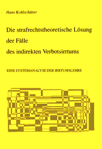

In memoriam, 7.7.1943 — 28.12.2018
hans@kohlschuetter.de
|
|
|
|
| | |
|
Dr. iur. Hans Kohlschütter In memoriam, 7.7.1943 — 28.12.2018 hans@kohlschuetter.de | |
|
| Klicken Sie bitte auf die farblich hervorgehobenen Wörter, um weitere Informationen zu erhalten |
| Zurück zur Startseite (dort finden Sie Informationen zu weiteren Büchern) |
|
Erstes Buch Hans Kohlschütter Die strafrechtstheoretische Lösung der Fälle des indirekten Verbotsirrtums EINE SYSTEMANALYSE DER IRRTUMSLEHRE 2. Auflage, 1989 173 Seiten ISBN 3-00-007653-0 Eine ausführliche Beschreibung findet sich weiter unten auf dieser Seite! |  |
|
Vorrede Die vorliegende Abhandlung hat der Rechts- und Wirtschaftswissenschaftlichen Fakultät der Universität Bayreuth im Frühjahr 1988 als Dissertation vorgelegen. Meinem hochverehrten Lehrer, Herrn Professor Dr. jur. Harro Otto, darf ich für die Überlassung des Themas sowie für die jederzeit gewährte Unterstützung und Förderung herzlich danken. Beabsichtigt ist, die in der Irrtumslehre vertretenen Ansätze einem Theorievergleich zu unterziehen. Ist dies möglich, wenn die Eigenart der Rechtsfälle, zu deren Lösung die Irrtumstheorien angewendet werden sollen ("Irrtumsfälle"), lösungsabhängig klassifiziert werden? Geht es an, die Irrtumsfälle positiver Art als diejenigen Rechtsfälle zu begreifen, die eine solche irrtümliche Tatbegehung zum Gegenstand haben, daß die Rechtsfolge eine Strafmilderung ist? Sind nicht die jeweiligen dogmatischen Ausgangspunkte der Irrtumstheorien inkommensurabel, ja unrealistisch? Wie kann ein Irrtumsfall eine Fehlvorstellung des Täters über die entweder "formelle" oder "materielle" Tatbestandsmäßigkeit bzw. Rechtswidrigkeit betreffen, wenn diese Bezugspunkte irrtümlicher Tatbegehung die Eigenschaften bzw. Stufen einer bereits begangenen Straftat darstellen? Exisitieren Tatbestandsmäaigkeit und Rechtswidrigkeit bereits im Zeitpunkt eines Irrtumsgeschehens, d.h. während der Tatausführung? Was ist der mögliche Gegenstand von Risikovorstellungen, die irrtumsbedingt fehlerhaft zu einem Zeitpunkt sind, in dem sich die Straftat noch in statu nascendi befindet? Sind nicht die Fragen nach der Art der Abgrenzung und nach der Anzahl der Stationen ("Stufen") des werdenden Wissens über die Straftat zweitrangig gegenüber der Frage, ob bzw. wie es begründbar ist, daß die Zuordnung der einzelnen Bestrafungsvoraussetzungen zur Tatbestandsmäßigkeit bzw. Rechtswidrigkeit bzw. Schuld fallentscheidend ist? Liefert die Erkenntnis, daß sich Irrtümer, die schuldstrafrechtlich erheblich sein sollen, auf das Vorhandensein von aktualen Tatsachen beziehen müssen, die mit den zukünftigen Auswirkungen eines Irrtumsereignisses gerade nicht identisch sein können, eine Information zur Qualitätsbestimmung der Irrtumstheorien? Ist eventuell die in den Irrtumstheorien inform von "Begriffsauflösungen" anzutreffende Menge an Wissensmängeln eine "sprachlogische Maßeinheit" für den komparativen Wert der Irrtumstheorien, den diese untereinander haben? Sind diejenigen Irrtumstheorien, deren Defizit an strafrechtstheoretischer Plausibilität und Problemlösungskraft am geringsten ist, durch eine "strafwerttheoretische" Modellkonstruktion reformierbar? Muß nicht primär der Entstehungsprozeß "der Sache selbst" nachgewiesen werden, der die Substanz der Straftat betrifft? Ist nicht insbesondere der zwischen einer Irrtumstheorie und einer Irrtumstat und einem Irrtumsfall bestehende Zusammenhang aufklärungsbedürftig? Wie soll dann methodisch vorgegangen werden? Eine Antwort hierauf könnte sein, die Straftat als Gebilde zu betrachten, das ähnlich einem naturwissenschaftlich zu untersuchenden Objekt die Eigenschaft aufweist, "systemhaft" zu sein. Für diese Analogie spricht, daß die Feststellung, ob ein bestimmter Strafrechtsfall die eine oder andere "Irrtumsart" (Art eines Irrtumsfalles) beinhaltet, stets von einer bestimmten Deliktstheorie, geschweige denn Irrtumstheorie abhängt - ein Phänomen, das in der Wissenschaftstheorie als "theory-loadeness of observations" bekannt ist (vgl. Heisenberg, Der Teil und das Ganze, 1969, S. 89, 108 f). Der Gegenstand der Strafrechtstheorie dürfte die Beschreibung und Erklärung von Ort und Inhalt sowie von Existenz und Entstehung des "kontraproduktiven", "subkulturellen" Systems "Straftat" sein. Ort und Inhalt mögen durch individuelle, gesellschaftliche und staatliche Momente fixierbar sein. Diese drei "Dimensionen" liefern den unerörtert gebliebenen allgemeinen Rahmen für den geltend gemachten Zusammenhang zwischen der "Naturalform" und der "Unwertform" sowohl der Entstehungsfaktoren als auch der Existenzweise von sozialschädlichen Taten, die strafbar sind. Die konkrete Verteidigungsfähigkeit dieses Konzepts hängt davon ab, ob es "funktioniert". Das ist der Fall, wenn daraus die Bedingungen der Möglichkeit der Arten der irrtümlichen Begehung einer Straftat ableitbar sind. Eben dies wird schließlich in der Vermutung unternommen, daß inzwischen die Probleme, die den Theorievergleich blockiert haben "aufgehoben" sind.
Hof/Saale, den 8. August 1988
Der Text wurde durchgesehen. Druckfehler waren zu berichtigen.
Hof/Saale, den 24. Januar 1989
(Letzte Änderung dieser Seite: 1.6.2000) |
| Eine Übersicht über die anderen Bücher finden Sie auf der Startseite. |